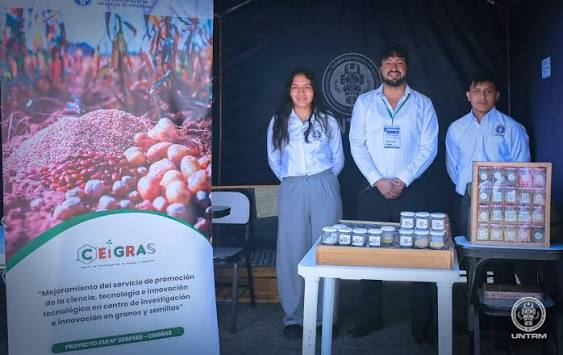
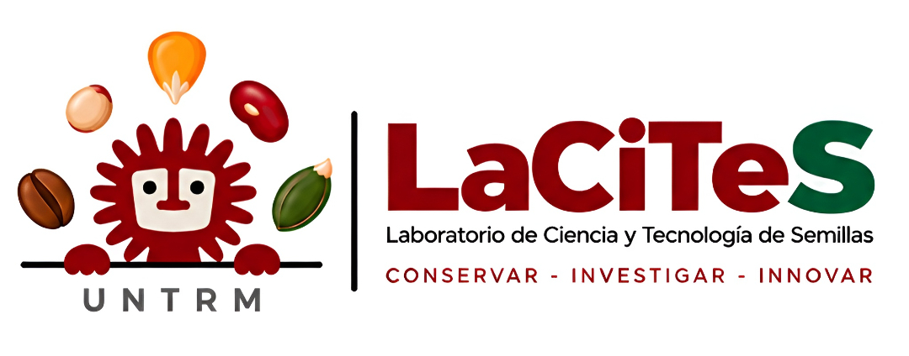
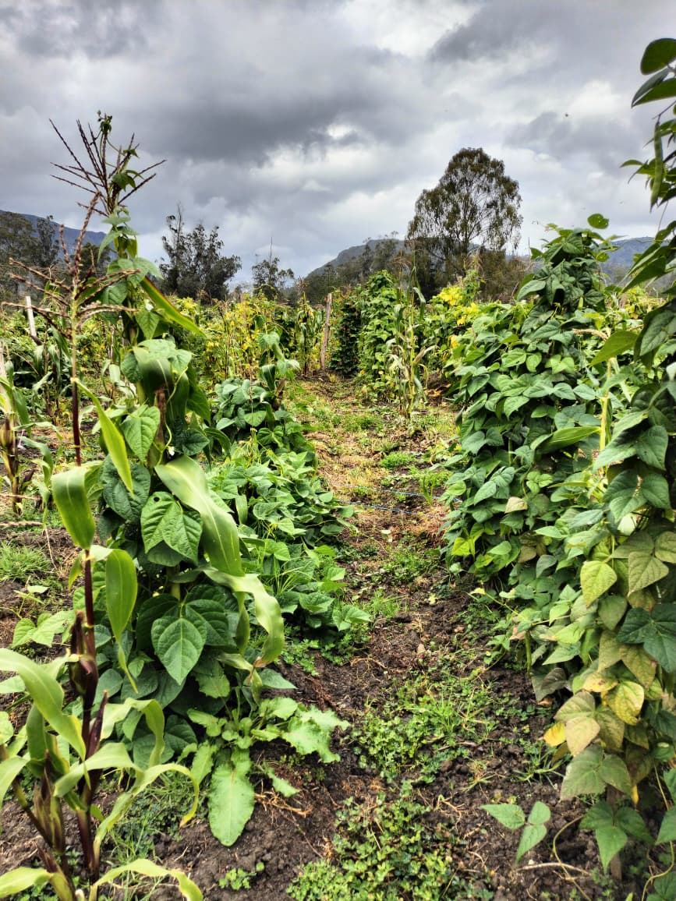

Maíz
Investigación de la diversidad genética, adaptación y potencial productivo.
Ciencia y tecnología de semillas
Un espacio para impulsar la investigación científica y la innovación tecnológica en cultivos de importancia para nuestra región.

Promover la investigación científica, el desarrollo tecnológico y la innovación en granos, semillas y cultivos de interés, fortaleciendo capacidades y generando soluciones para productores y la región.

Cuatro líneas para investigar, caracterizar y poner en valor la diversidad agrícola.
Investigación de la diversidad genética, adaptación y potencial productivo.

Caracterización de recursos genéticos y apoyo al mejoramiento del cultivo.

Estudio de un cultivo andino de alto valor nutricional y gran adaptación.
Caracterización y puesta en valor de la diversidad de ajíes.
LaCiTeS integra investigación y trabajo con cultivos para contribuir al desarrollo agrícola y tecnológico de la región.